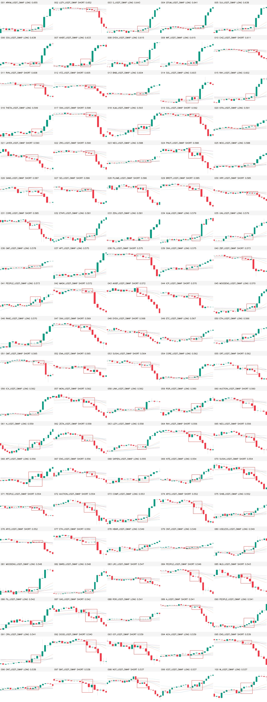

高清画廊
前 100 张总览
总览图只用于快速浏览；画廊里的单图仍是 1280×742 原始 PNG。

口径
只有当前 data.yaml 实际暴露的 9,976 张正例能进入画廊；全部 10,000 张仍保留在完整排名中。PERFECT_CANDIDATE / STRONG_CANDIDATE 只是自动严格候选，不是 Owner Gold，也没有获得训练资格。全部分数与淘汰原因见 ranked_manifest.jsonl 和 ranked_manifest.csv。